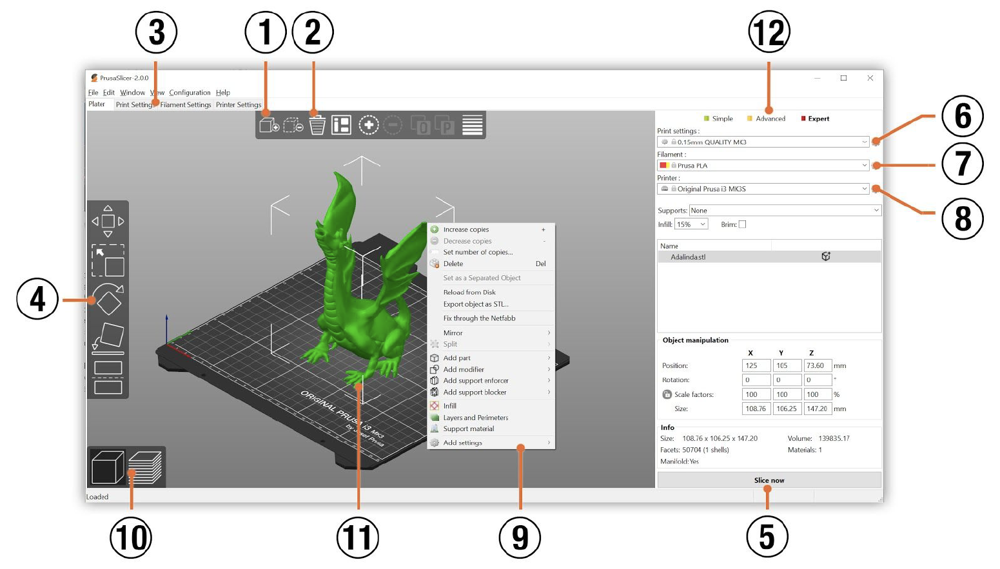
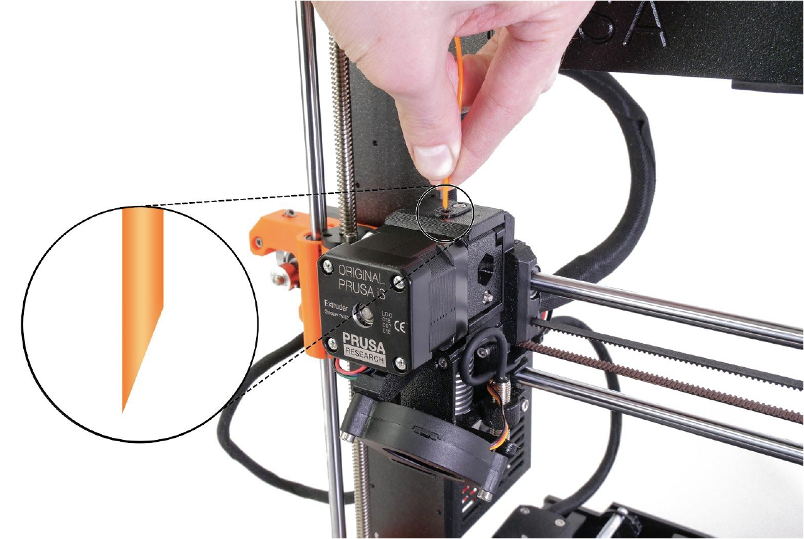

To make a part, you must first develop a 3D model. Computer Aided Design (CAD) programs provide the tools to do this. If you have access to SolidWorks, that will likely be the best software. Otherwise, TinkerCad.com is a great free and internet browser-based CAD program.
NOTE: Instructions on using CAD software to develop the model are
beyond the scope of these instructions. Please refer to software
documentation for tutorials and instructions.
When your model is complete, save it in .STL format. Then you are ready to load your file into the slicer software!
Next you will need to convert your 3D model into a language that the printer understands. G-code is a file format understood by 3D printers. It is a set of instructions that tell the 3D printer what parameters to follow in creating the model. These parameters include nozzle movement, nozzle and heatbed temperatures, filament feed speed, fan speed, etc. When these instructions are executed in order, you end up with a print.
- The Add button loads models into PrusaSlicer
- Delete and Delete All buttons remove the model(s) from PrusaSlicer
- Opens the detailed settings of print, filament, and printer
- Move, scale, rotate, Place on Face and cut tools
- Slice and generate .gcode button
- Quality / Speed setting of print
- Material selection
- Print selection
- Right-click on model opens a context menu
- Switch between 3D editor and layers preview
- Model preview
- Switch between Simple / Advanced / Expert mode
You might need to adjust some of the print settings to optimize for your material of choice. Recommended print settings can be found in Prusa's Material Guide. You must save your completed g-code to an SD card or USB flash drive. Once this is complete, you are ready to move to the printer.
Insert your SD card to the printer. Select Print from SD card
, then load your choice of filament
spool onto the spool holder. Make sure the material
you load is the same as the material you specified in your g-code. Allow
the printer nozzle to pre-heat.
WARNING!: From this point on DO NOT TOUCH
THE NOZZLE. It is hot up to 200 °C.
Make sure you cut the filament tip to a point with a pair of wire cutters. When directed by the LCD display, insert the filament into the extruder. Filament will begin coming out of the nozzle. When the filament loading is complete, remove waste material from the nozzle and print area.
Before pre-heating of the heatbed, you will need to prepare the print surface. Some materials like PLA will only require a clean surface on the Smooth PEI sheet. You should clean the print surface with 90+% isopropyl alcohol and a wipe. Other materials may require a film of Windex or glue stick to be applied. More detailed information of print surface prep can be found in Prusa's First Layer Issues guide.
Select pre-heat from the menu and start the print. The LCD display will
show the pre-heat data and the printer will begin the mesh bed leveling.
After leveling is complete, the nozzle purge will lay a strip of
filament in the front left corner of the print table. Afterwards you
should select "Live adjust Z" and see
Adjusting Z:
X.XXX mm
on the display as the first layer starts. You should adjust the z-height
of the nozzle with the selector wheel until the filament bead forms a
flattened oval cross-section shape. This should be close to -1 mm.
Now your print is commencing and you just have to wait. Come back in a few hours to a day for average prints to collect your part.
WARNING!: Watch the first few printed layers to
be sure the filament has attached to the bed properly (5 to 10
minutes).
First let the nozzle, heatbed, and part cool. To remove your print, remove the entire build plate from the heatbed. A gentle bend of the build plate in both directions should free the part. If the part is not easily releasing, you may push a plastic spatula under the corner of your part to help gently pry it free. Remove the part and clean the bed again with isopropyl alcohol.
Congratulations! You printed a part! Happy printing!